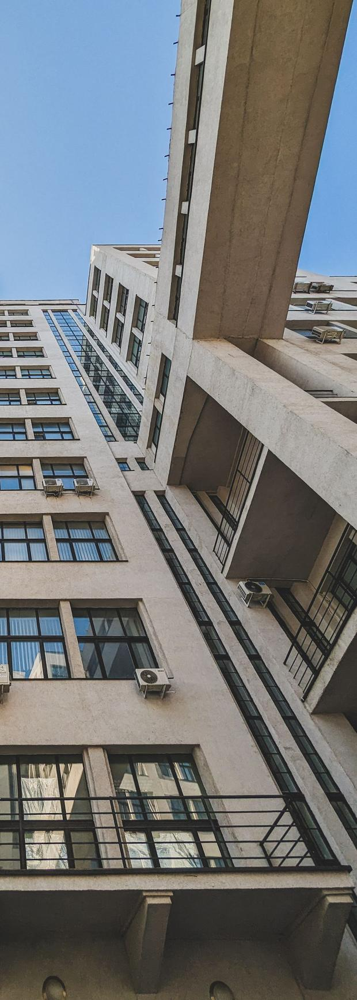

Ремонт без сюрпризів у чеку
Автосервіс на Салтівці. Спершу діагностика і кошторис у Telegram — потім ремонт, лише погоджений.
- 12 міс / 10 000 км гарантія
- 7 хв від м. Студентська
- Свої запчастини — можна

Telegram · майстер Олег
Колодки передні — 2,1 мм
Терміново780 ₴
Пильник ШРУСа — тріщина
Погоджую 780 ₴
До ~15 000 км950 ₴

ДіагностикаКошторис у TelegramРемонт з фотозвітомСтарі деталі — вам